|
|
はじめにこのヘルプには、診断画像ディスクを使うための方法やヒントが書かれています。
見ているページを印刷するには印刷したいページを表示し、Ctrlキーを押したままPキーを押すか、または、右クリックして「印刷」を選択すると、印刷のためのダイアログボックスが開き、そのページを印刷できます。 動作環境
起動／終了のしかた起動のしかた
終了のしかた
診断画像を開く
画像をビューする診断画像ディスクの画像を開いた状態で（→診断画像を開く）、目的の画像が表示されているセルにマウスカーソルを移動し、マウスのホイールを回転させると、セルに割り当てられているシリーズの各画像をビューできます（セルの左端にあるスクロールバーをドラッグしても同じことができます）。
参考
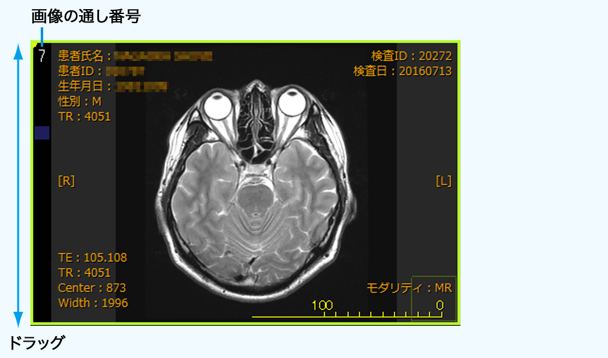 この状態から、画像を比較して経過を確認したり、拡大や縮小、トーンの変更などの操作ができます。具体的な操作については以下のリンクを参照してください。 セルに表示するシリーズを変更するシリーズリストから任意のシリーズをセルにドラッグ＆ドロップすると、表示するシリーズを変更できます。
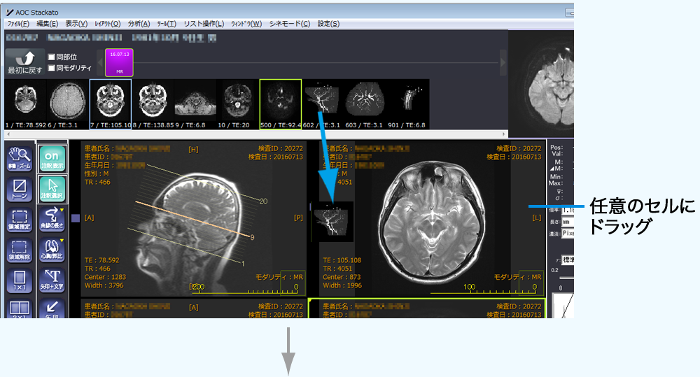
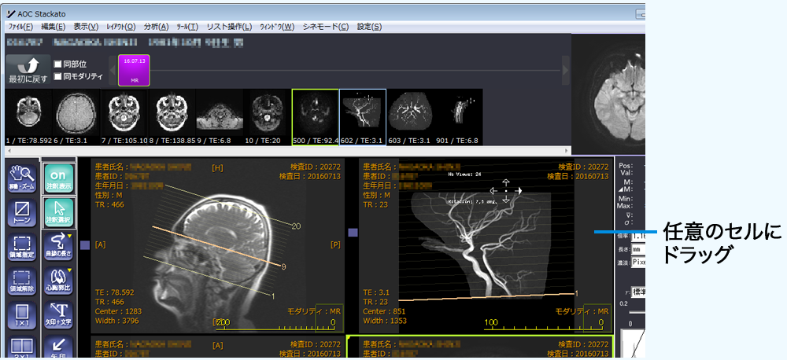 参考目的のセルをクリックして選択状態にしてから、シリーズリストの任意のシリーズをクリックしても同じことができます。 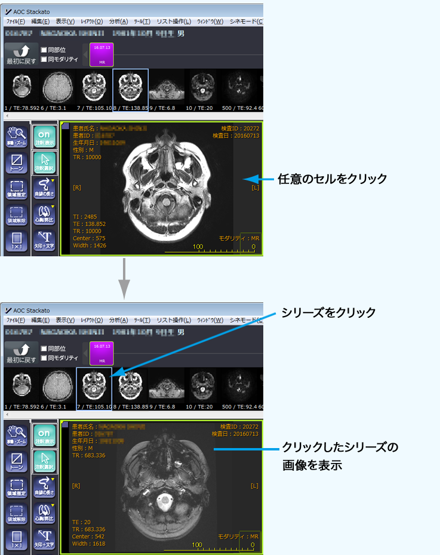 セルの表示が変更された直後、右隣のセルが選択状態になり、緑色の枠が付きます（右端のセルが選択状態のときは折り返して左端が選択されます）。 参考
セルをブランクにしたいときはブランクにしたいセルを右クリックし、「この領域をブランクにする」を選びます。 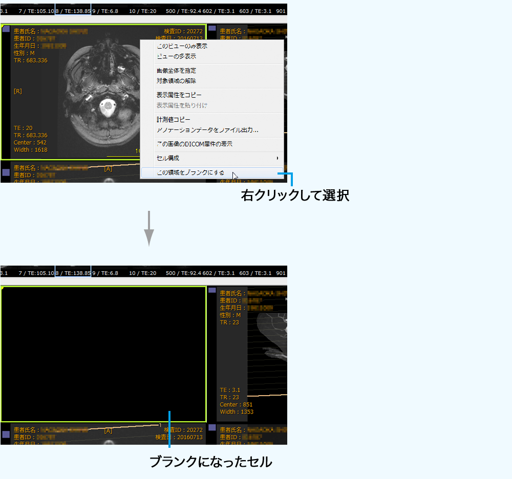 画像を比較して経過を確認したり、拡大や縮小、トーンの変更などの操作ができます。具体的な操作については以下のリンクを参照してください。 セルの構成を変更する画面に表示するセルの縦横それぞれの枚数を変更するには、ツールバーの「1x1」（セルを1枚にする）、「2x1」（セルを横2枚にする）、「2x2」（セルを縦横2枚ずつにする）のいずれかのボタンをクリックします。 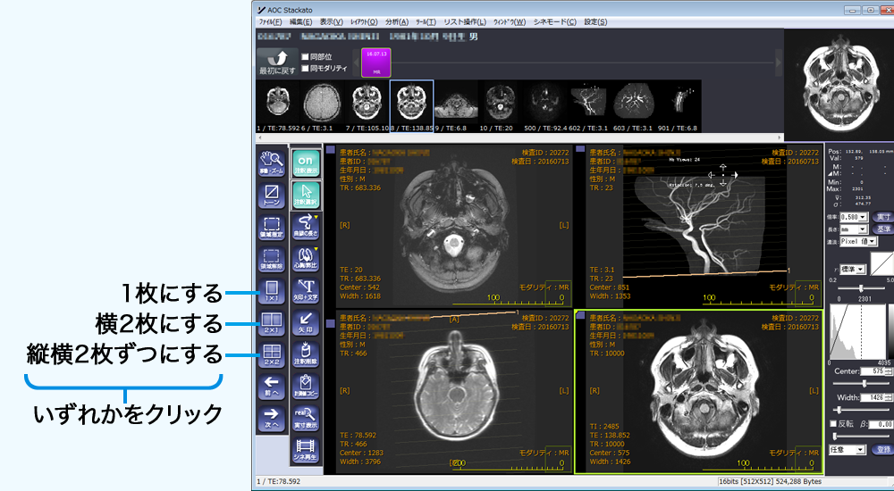 その他のセル構成にしたい場合は、「レイアウト」メニューの「セル構成」を選ぶか、または、セルを右クリックすると表示される格子状の画面から縦横の枚数を指定します。 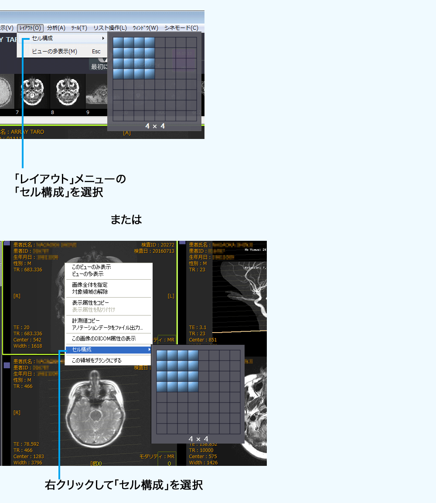 検査の異なる画像を比較するタイムラインを使うと、画像の経過をアイコンで確認したり、アイコンから検査の異なる画像を比較できます。タイムライン上には、その患者の診断画像を示すアイコン（タイムボックス）が検査ごとに表示されています。 タイムボックスをクリックして選択すると、該当する検査のシリーズがシリーズリストに表示されるので、シリーズリストから任意のセルに異なる検査のシリーズを割り当てられます。この操作により、検査の異なる画像を比較できます。 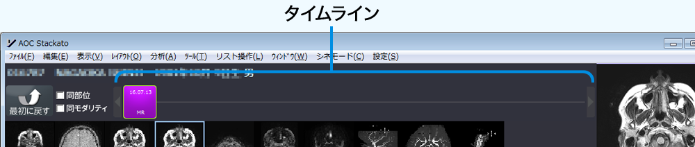
「同部位」または「同モダリティ」チェックボックスをクリックしてチェックすると、読影対象と同じ部位またはモダリティのタイムボックスだけを表示できます。最初の表示にもどす」ボタンをクリックすると、タイムラインの表示をビューワを開いたときと同じ状態に戻せます。 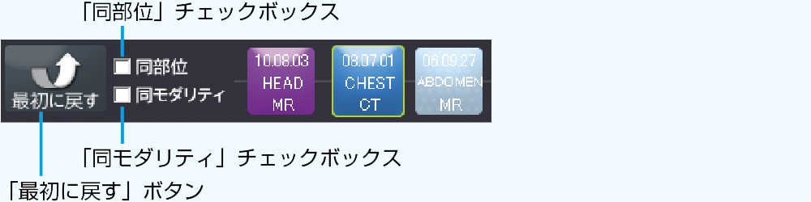 操作する画像を選ぶ／複数の画像を同時に操作する（連動）トーンの変更や画像の回転など、ビューワで操作する対象のセルを選ぶ必要があります。 選びかたに応じて、セルにはカレントと選択の2種類の状態があります。 参考
セルをカレントにする選択したいセルをクリックします。セルが緑色の枠で囲まれ、カレント状態になります。カレントのセルは、枠の左上に黄色く塗りつぶされた丸いマーク（）が付きます。 複数のセルを選ぶCtrlキーを押しながらカレント以外のセルをクリックします。クリックしたセルがカレント状態になり、直前にカレントだったセルが選択状態になります。選択状態のセルは枠の左上に黄色く縁どりされた丸いマーク（）が付きます。 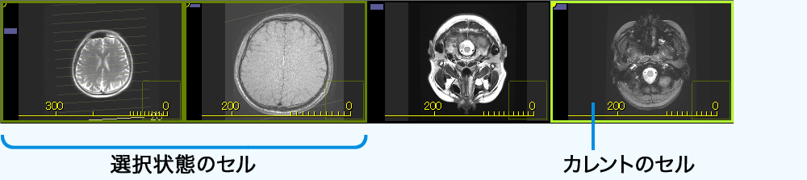 すべての画像を選択するCtrlキーを押しながらAキーを押すか、または「編集」メニューの「すべてのビューの選択」を選択すると、すべてのセルが選択状態になります。 選択を解除する「編集」メニューの「すべてのビューの選択を解除」を選びます。 明るさ／コントラスト（WW/WL）を調整する画像の明るさやコントラストを調節します。 「トーン」ボタンを使って設定するツールバーの「トーン」ボタンをクリックし、画像上でマウスをドラッグすることにより、トーンの変更を行うことができます。
参考：上記の方法では、Center値とWidth値を同時に変更することはできますが、β値とγ値は同時には変更できません。 元の表示状態に戻したいときはツールバーの「リセット」ボタンをクリックするか、または、「編集」メニューの「画像表示リセット」を選択します。 インフォメーションパレットを使って細かく設定するインフォメーションパレットを使って、明るさやコントラストの値を直接入力したり、トーンカーブの形状を直接修正できます。 明るさ（Center値）とコントラスト（Width値）を変更する
Center値とWidth値は、インフォメーションパレットのトーンカーブをドラッグしても変更できます。トーンカーブ上でマウスの左ボタンを押した状態で、左右に移動することでCenter値を、上下に移動することでWidth値が変更されます。 トーンをS字にカーブさせる（β値）β（ベータ）値を変更することにより、トーンカーブをS字状にカーブさせ、中間調（画像の明るいところと暗いところの間の領域） のコントラストを強調できます。 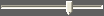 （スライダ）を左右にドラッグします。γ値・γカーブを変更するγ（ガンマ）値を変更することにより、γカーブの度合いを変更できます。 トーンカーブを白黒反転する表示している画像のトーンカーブを白黒反転するには、インフォメーションパレットの「反転」チェックボックスをチェックするか、または、「表示」メニューの「トーンカーブの反転」を選択します。 よく使うトーンカーブを登録／適用する
参考明るさ／コントラスト（WW/WL）を調整すると、ドロップダウンリストボックスの表示は「任意」に変わります。 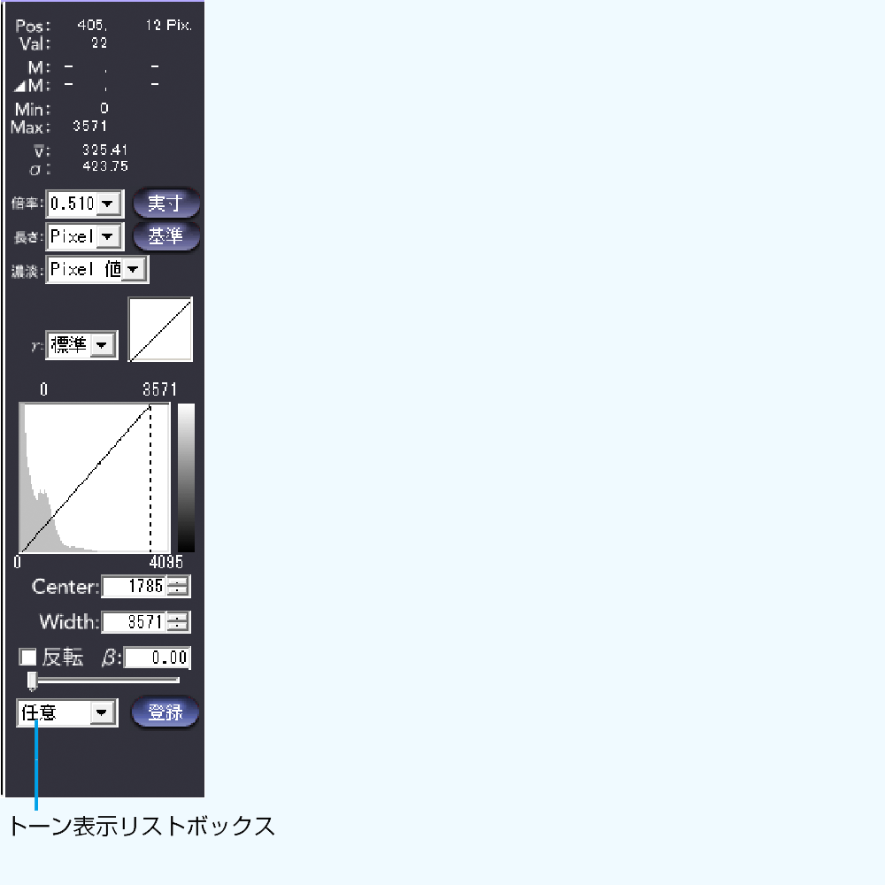 画像を移動するセル内で画像を移動し、表示位置を調整するには、ツールバーの「移動・ズーム」ボタンをクリックし、セル内の画像をドラッグします。 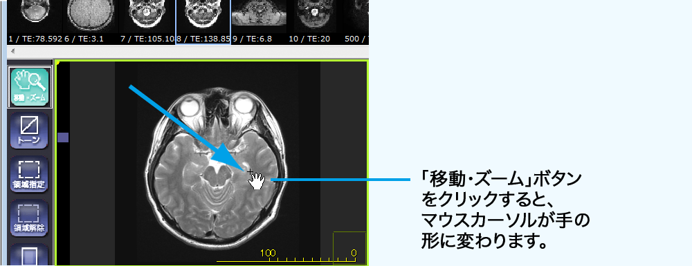 参考
画像を拡大／縮小するマウスのドラッグ、またはインフォメーションパレットを使い、セル内で画像を拡大／縮小できます。 「移動・ズーム」ボタンで拡大／縮小する
ツールバーの「移動・ズーム」ボタンをクリックし、マウスの右ボタンを押したまま、上方向に移動してボタンを離すと拡大します。 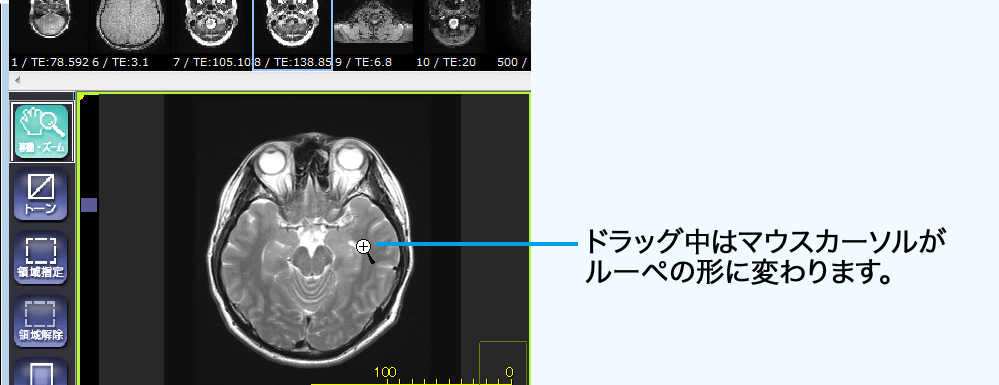 参考
インフォメーションパレットで倍率を変える
インフォメーションパレットの「倍率」ドロップダウンリストボックスから、画像の表示倍率を選択します。（選択できる表示倍率は、「0.125」、「0.250」、「0.500」、「1.000」、「2.000」、「4.000」、「8.000」、「実寸」です。 ） 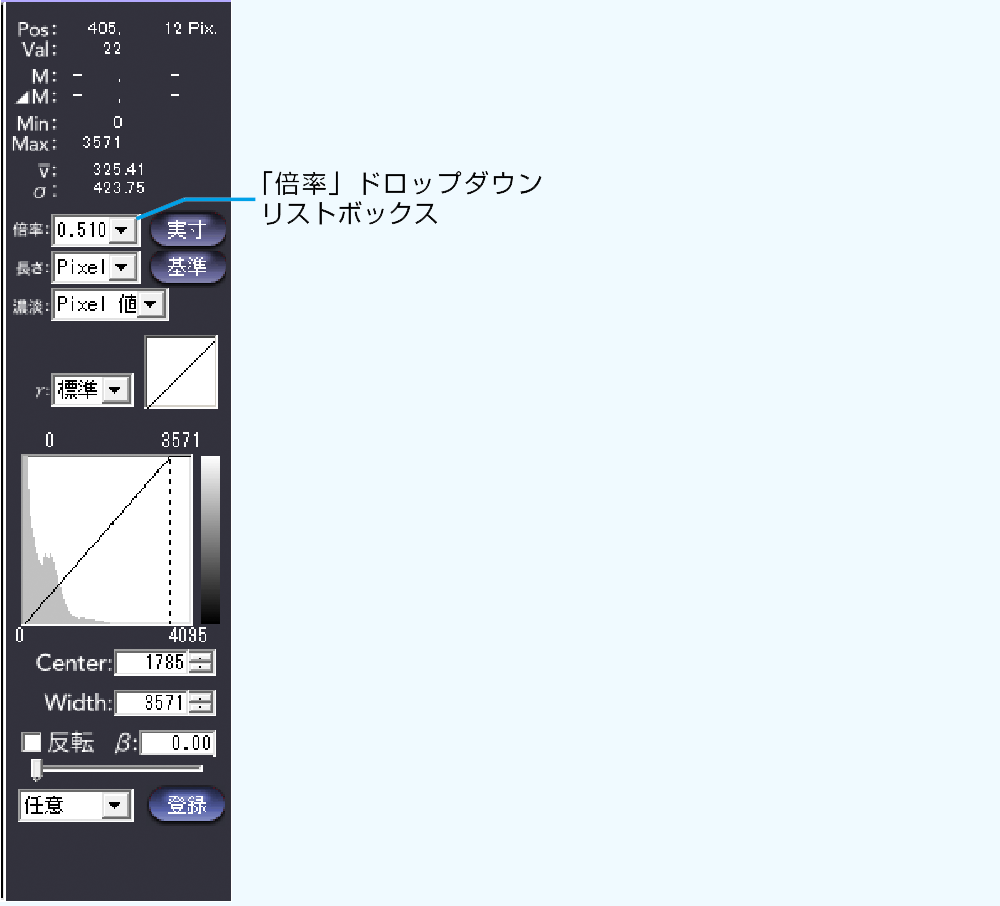 参考現在の表示倍率は、「倍率」ドロップダウンリストボックスを選択したとき、リストの一番上に表示されます。 領域を選択する表示している画像の任意の範囲を対象領域（ROI）として指定します。 対象領域を指定する
領域が波線で囲まれ、対象領域が作成されます。 画像全体を対象領域に指定するにはセルをダブルクリックするか、または「編集」メニューの「画像全体を指定」を選択します。 参考
対象領域を解除する対象領域の指定を解除するには、以下のいずれかの操作を行います。
特別な画像にしるしを付ける（キー画像）ビューワで開いている画像から、特別な画像にしるしを付け、「キー画像」として扱えます。キー画像として扱うことにより、特別な画像が見分けやすくなります。 注意：キー画像の設定は、ビューワを終了すると初期化されます。 キー画像を解除するにはキー画像エリアをクリックします。 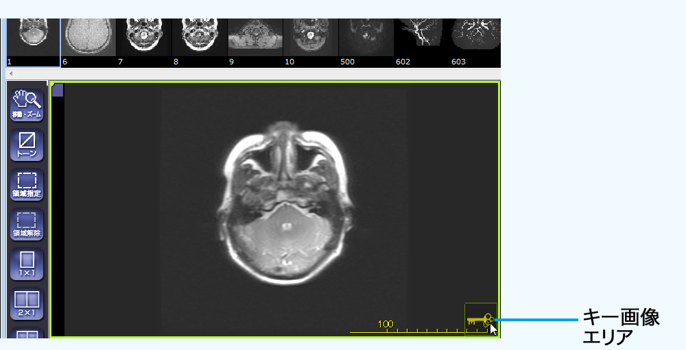 画像をシネ表示する同一シリーズの画像や、マルチフレーム画像（1つの画像データ中に複数のフレームが含まれている画像）をシネ表示できます。 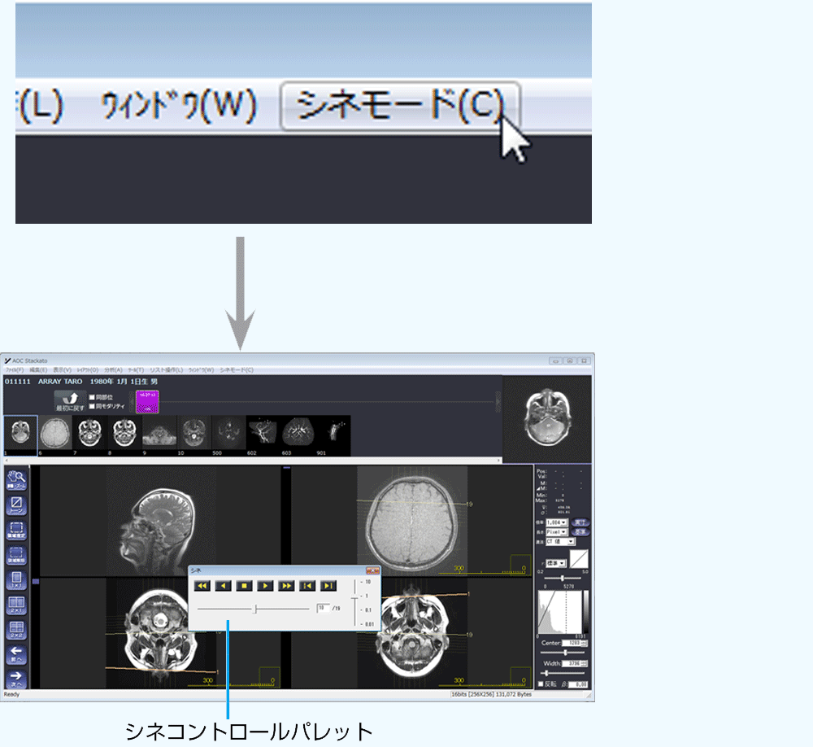 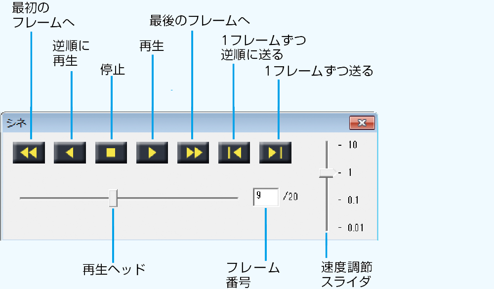 注意：
シネ表示を終了するにはシネコントロールパレットの右上の閉じるボタン（）をクリックしてシネコントロールパレットを閉じます。 簡易シネ表示するマウスのMボタン（ホイール）を使用して、簡易シネ表示ができます。
参考：マウスの移動幅によって速度も調節できます。幅が大きければ再生速度は早くなり、小さければ遅くなります。 ビューワウィンドウシリーズリストシリーズの代表画像がサムネイル表示されています。サムネイルをセルにドラッグ＆ドロップすると、そのシリーズすべての画像をマウスのホイールまたは左側にあるスクロールバーを使ってビューできます。サムネイルはオーバービューウィンドウにもドラッグ＆ドロップできます。 タイムライン患者の検査を示すアイコン（タイムボックス）が表示されています。任意のタイムボックスをクリックすると、シリーズリストにその検査のシリーズが表示され、セルに画像を表示できるようになります。 オーバービューウィンドウ選択している画像の全体像が表示されます。拡大表示している場合は、拡大されている部分が枠で示されます。 シリーズリストからサムネイルをドラッグ＆ドロップすると、セルと同様にシリーズすべての画像をマウスホイールまたは左側にあるスクロールバーを使ってビューできます。 ツールバー以下のボタンが用意されています。ボタンをクリックすると対応した操作ができます。
インフォメーションパレット表示されている画像のトーン（明るさ・コントラスト）や倍率を細かく調整できます。 セル実際に画像をビューするためのウィンドウです。シリーズリストから任意のサムネイルをセルにドラッグ＆ドロップすると、そのシリーズすべての画像をマウスホイールまたは左側にあるスクロールバーを使ってビューできます。カレント状態のセルと撮影位置が近いセルは、カレント状態のセルと連動して表示されます。 参考
ツールバーツールバーの各ボタンを使って画像に対してトーンを変えたり、移動・拡大などの操作ができます。 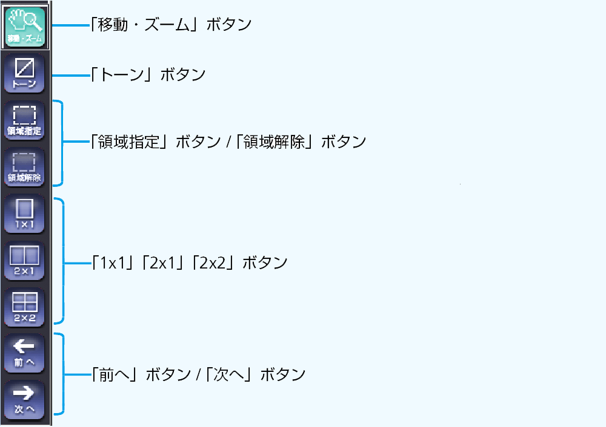 「移動・ズーム」ボタンビューエリア内で画像をドラッグし、画像を移動して位置を調節します。 「トーン」ボタン画像上でマウスをドラッグしてトーンを変更します。 「1x1」／「2x1」／「2x2」ボタン画面に表示するセルの縦横それぞれの枚数変更します。 「前へ」／「次へ」ボタン検査が複数ある場合は、ボタンをクリックするごとに前の検査 / 次の検査を表示します（開いている検査 が1つだけの場合はボタンがグレイアウトしています）。 インフォメーションパレットその他動作環境
商標について2.2 - 02J Jan 2012 Copyright (C) Array Corporation 2001-2012 All rights reserved. このヘルプに記載されている会社名、製品名は各社の商標または登録商標です。 その他このヘルプは情報の提供を目的として作成されています。正確に記述するように努めましたが、製品がすべての点で、ここに述べられたとおり動作することを保証するものではありません。また、製品の仕様や機能は予告なしに変更する場合があります。 |